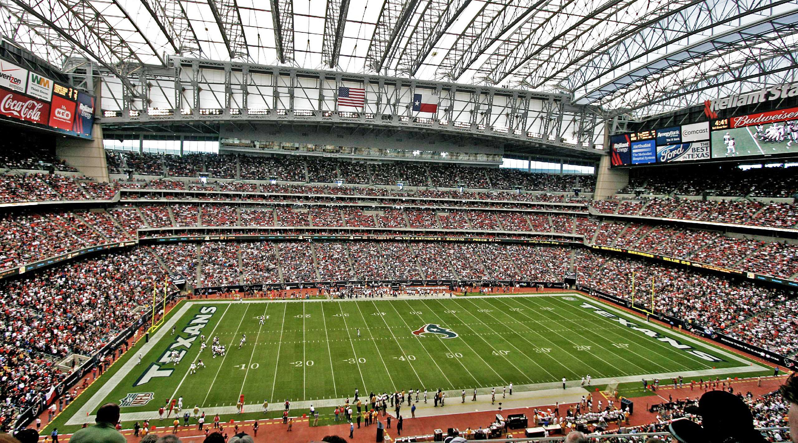

NRG Stadium (formerly Reliant Stadium), Houston. Venue still.
Venue still
NRG Stadium — Texans home venue still
Wikimedia Commons venue stills. Not league game photography.
Texas desk — Texans, Astros, Rockets. Character and the score, not celebrity.

Wikimedia Commons venue stills. Not league game photography.
Stroud threw for 194 yards and three touchdowns — to Nico Collins (42 yards), Kayson Boutte (24 yards) and Marlin Klein (13 yards) — as Houston built a 14-3 lead by early in the second quarter and never trailed again. Colts quarterback Daniel Jones threw his NFL-leading 13th interception of the season, one of two Houston takeaways off him, and kicker Spencer Shrader missed two field goals, including a 62-yard attempt blocked by Texans defensive end Logan Hall. Indianapolis played without both starting cornerbacks and both starting offensive tackles and fell to 3-8 on the season; the Colts get the weekend off before hosting the New York Giants on Nov. 29.
Wilson, a 43-year-old former big-league catcher who most recently served as the Washington Nationals' catching coordinator, will work under Ausmus, who takes over as Houston's manager after Joe Espada's departure. Bayer, who spent nearly 15 years in the St. Louis Cardinals' front office and rose to senior director of baseball development, joins Flores's staff as an assistant general manager, replacing Connor Huff, who resigned last week. The moves follow Houston's Nov. 12 announcement that Ausmus would return to the organization as manager, continuing an offseason overhaul of both the Astros' dugout and front office.

Friday's game tips at 9 p.m. Central at Ball Arena, according to the NBA's own schedule page, and counts in both regular-season standings and NBA Cup group play. The Rockets and Nuggets already met once this November, with Houston winning that earlier matchup, according to the NBA's game center listing. Houston is in the middle of a road-heavy stretch of its schedule; Friday's late tip-off means Texas viewers should check the league's official broadcast listing rather than rely on unofficial streams.

Team and league pages for scores and schedules. Not ESPN opinion. Venue stills are Wikimedia Commons with credit on the page.